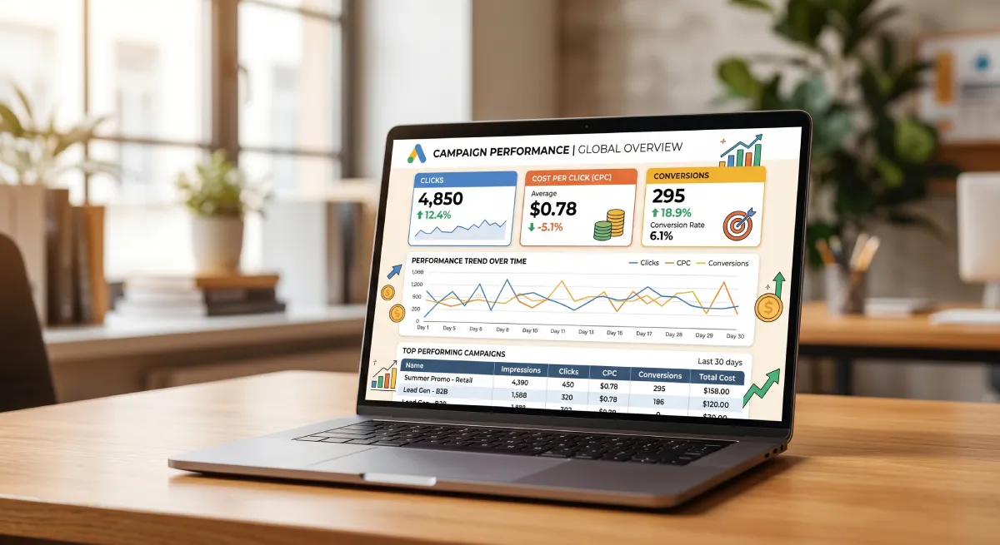
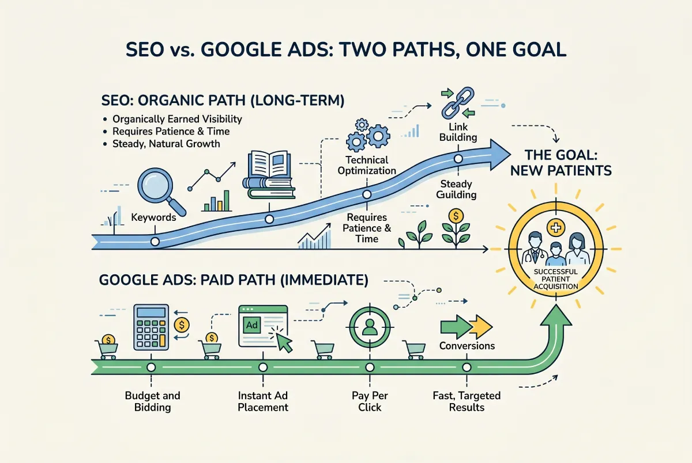

If you are considering Google Ads for your therapy practice, you probably have questions. I hear them constantly. And the answer is neither a simple yes nor a simple no.
Google Ads can work exceptionally well for therapists. They can also burn through your budget with zero return. The difference lies entirely in your campaign architecture, the quality of your landing page, and your understanding of the core metrics.
In this article, we explain exactly how Google Ads work for therapists, what they actually cost in competitive markets, and how to decide if they fit your specific practice.
How Google Ads Work for Therapists
Google Ads place your advertisement at the absolute top of the search results when a user types specific keywords. If someone searches "anxiety therapist New York" and you run an active campaign for that exact term, your ad appears above all organic results.
You pay exclusively when someone clicks your ad. We call this Pay-Per-Click (PPC). You do not pay for impressions. You pay for action.
An automated auction determines the price of each click. If fifty therapists bid for the exact same keyword, the price skyrockets. If you target highly specific, low-competition keywords, you pay significantly less per click.
The Real Cost of a Click in New York
I remain entirely honest here because you need this truth before you invest.
Keywords for therapists in New York rank among the most expensive in the entire healthcare industry. The reason is simple: fierce competition from thousands of local therapists, massive corporate directories, and well-funded telehealth platforms all bidding for the same words.
This means if you pay $10 per click and your landing page converts at 5%, you need 20 clicks to secure one new inquiry. Your acquisition cost sits at $200.
For a therapist charging $150 to $200 per session, where an average patient completes 15 to 20 sessions, that single patient represents $2,250 to $4,000 in total revenue. A $200 acquisition cost delivers a massive return on investment.
But here lies the catch: this math only works if the visitor clicks and lands on a page engineered to convert them. Send them to a weak site, and you burn that $200 instantly.

Quality Score: The Hidden Variable
Many assume Google Ads operate on brute financial force: pay the most, rank the highest. Reality is more complex and far more fair.
Google uses a grading system called Quality Score. It rates every ad from 1 to 10 based on three distinct factors:
1. Click-Through Rate (CTR)
How many people see your ad and actually click it. High relevance drives high clicks. Google rewards ads that users find useful.
2. Ad Relevance
How precisely your ad matches the search term. If someone searches "anxiety therapist" and your ad says exactly that, your relevance hits the top tier.
3. Landing Page Experience
The most critical and misunderstood factor. Google evaluates the page your ad points to. If it loads instantly, carries highly relevant content, and keeps the user engaged, your Quality Score rises.
Why does this matter? Because a high Quality Score directly lowers your cost per click. A therapist with a score of 8 pays significantly less for the exact same top position than a competitor with a score of 4.
The Mistake of Advertising Without a Landing Page
This is the most expensive mistake beginners make. They build a campaign, buy traffic, and dump it straight onto their generic home page.
A home page is not a landing page. It holds too much information, offers too many navigation options, and lacks a singular, ruthless focus.
A visitor clicking an ad for "anxiety therapist NYC" expects a page dedicated entirely to anxiety therapy. They want to see your approach and find an immediate way to contact you. Send them to a generic home page, and they bounce. You still pay for the click.
An effective Google Ads landing page features:
An exact-match headline: If they searched for Manhattan anxiety therapy, the headline says "Anxiety Therapy in Manhattan."
A clear value proposition: Who you are, what you do, and how they can start working with you.
Zero navigation: Remove the top menu. The page holds one goal: contact. Do not distract the user.
Social proof: Anonymous testimonials or strong credential highlights build instant trust.
An aggressive CTA: A highly visible button to book a consultation, present without forcing the user to scroll.
Google Ads vs. SEO: What You Actually Need
People constantly pit these two against each other. They are not enemies. They execute different strategies.
SEO (Organic): Slow but Sustainable
SEO builds visibility over time. It takes 3 to 12 months to see traction. But once you rank, you generate traffic around the clock without paying for a single click.
Google Ads: Immediate but Demanding
Google Ads deliver immediate visibility. You launch a campaign and appear at the top today. But the moment you stop paying, you vanish.
The dominant strategy uses both. You run Google Ads to generate immediate cash flow and visibility while you build your organic SEO in the background. As your SEO takes over, you scale back your ad spend.

Which Keywords to Target
Keyword selection dictates your entire campaign. You must understand the difference between the intent behind the search.
High-Intent Keywords
These signal a user ready to act. Examples: "book therapist NYC," "find anxiety therapist Manhattan," "therapy appointment New York." Prioritize these ruthlessly. The person typing them is actively seeking a professional.
Research Keywords
These signal someone looking for information. "Does therapy help anxiety," "what is CBT," "how to find a therapist." These convert poorly because the user is not ready to commit. Avoid them in paid campaigns.
Negative Keywords
Tell Google exactly what you do not want. If you do not treat minors, add "teen," "child," and "adolescent" to your negative list. If you do not offer couples therapy, block "couples." You stop paying for clicks you cannot serve.
The Required Budget
Everyone asks this. The answer depends entirely on your local competition and the keywords you target.
For a therapist in New York, $400 to $800 a month represents a realistic starting point. This buys enough clicks to test the market, optimize the campaign, and gather real data.
Start with $200, and you lack the data volume to make informed decisions. You rely on luck, and the statistical sample remains too small.
Start with $1,500 without prior experience, and you simply burn cash. Start lean, optimize the campaign, and scale only when the math proves profitable.
The Metrics That Actually Matter
Google provides an overwhelming amount of data. Ignore the noise. Track these four metrics relentlessly:
Cost Per Conversion
How much you pay to secure one solid inquiry. If you pay $150 for an inquiry that turns into $3,000 of revenue, you win the game.
Click-Through Rate (CTR)
The percentage of people clicking your ad. Anything below 2% means your ad copy fails to capture attention.
Landing Page Conversion Rate
The percentage of visitors who actually contact you. Below 3% signals a broken landing page that leaks money.
Quality Score
A score below 6 demands immediate fixes to your ad relevance or landing page experience.
When Google Ads Make Sense
They do not always make sense. You must know your position before you invest.
They make sense when you need patients immediately and cannot wait for SEO. They make sense when you have proven local demand. And they make sense when you own a landing page built specifically to convert.
They fail when your site looks amateur. They fail when you lack the time to monitor the data. And they fail when your budget is too small to survive the learning phase.
An Example That Works
Imagine you run a Brooklyn practice specializing in anxiety. You launch a sharp landing page for 'anxiety therapy Brooklyn.' You allocate $600 a month.
At $8 per click, you secure 75 clicks. Your optimized landing page converts at 6%, delivering 4 to 5 solid inquiries. You close 60% of them into booked patients. You secure 2 to 3 new patients.
Each patient completes an average of 15 sessions at $175. That equals $2,625 per patient. Two patients deliver over $5,000 in revenue from a $600 ad spend. That is an 8x return on investment.
This math requires precision. Sharp ad copy, exact keywords, and a flawless landing page. Miss one element, and the math collapses.
Can You Manage It Yourself?
Technically, yes. Google designed the platform to look accessible. But "can" does not mean "should."
Every hour you spend learning the platform is a billable hour lost from your practice. Furthermore, beginners make expensive mistakes. They use broad match keywords, ignore negative keywords, and send traffic to weak pages. They bleed budget before seeing a single result.
If you hire a professional, ensure they deeply understand the healthcare sector. Google enforces strict rules for mental health advertising (e.g., severe restrictions on remarketing). An amateur will trigger account suspensions.
The Bottom Line
Google Ads work for therapists. But they only work when you deploy a high-converting landing page, target the exact right keywords, allocate sufficient budget, and monitor the data ruthlessly.
If you miss any of these pieces, you will waste money. If you align them perfectly, you can fill your practice faster than any other digital channel allows.
The real question is not "Do Google Ads work?" The question is "Are you prepared to run them correctly?"
We Run Google Ads for Therapists in New York
At Evida Studio, we design high-converting landing pages and manage aggressive Google Ads campaigns for therapists who demand a return on their investment. Start with an honest conversation.
Let's Talk